Cross-Validation Results: Automatic Report and Interpretation
Metrics by Fold
| Fold |
R2 |
MSE |
RMSE |
MAE |
| 1 |
-0.408458 |
1070.715357 |
32.721787 |
24.750000 |
| 2 |
0.177829 |
175.853333 |
13.260970 |
11.100000 |
| 3 |
-1.498979 |
242.956250 |
15.587054 |
11.908333 |
| 4 |
-2.634671 |
363.467083 |
19.064813 |
14.675000 |
| 5 |
-0.188336 |
960.571667 |
30.993091 |
28.383333 |
Feature Importance (mean ± std)
| feature |
mean_importance |
std_importance |
| PR |
0.250119 |
0.081815 |
| OL |
0.110421 |
0.078616 |
| TL |
0.109558 |
0.043513 |
| FL |
0.095273 |
0.033795 |
| CL |
0.085043 |
0.036177 |
| PL |
0.078091 |
0.020555 |
| TR |
0.075344 |
0.023195 |
| FR |
0.074865 |
0.048299 |
| CR |
0.065831 |
0.030059 |
| OR |
0.055456 |
0.020553 |
Main Plots
feature_importances_mean_std.png
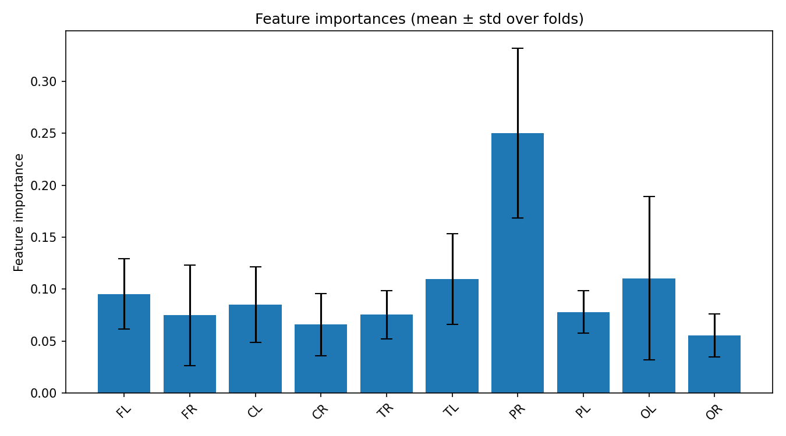
feature_importances_correlation_heatmap.png
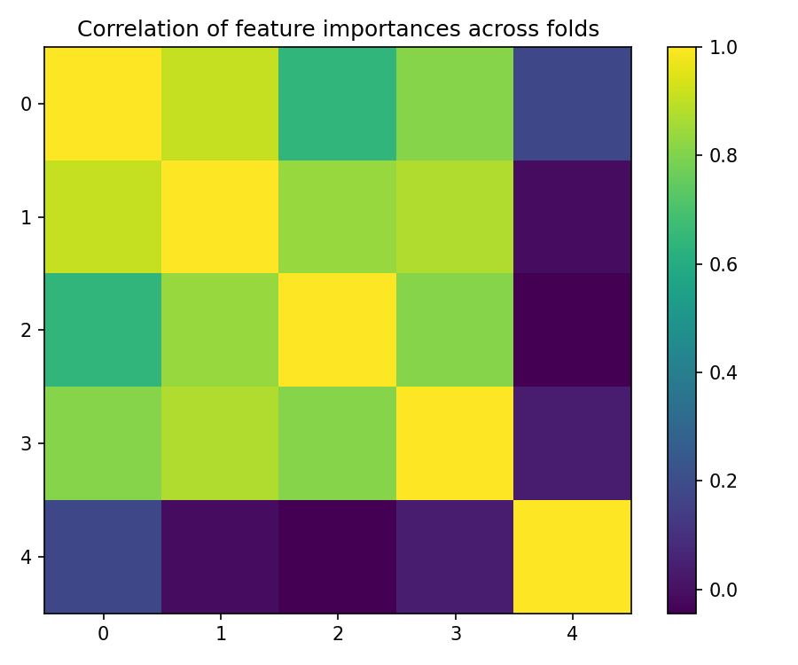
best_fold_2_feature_importances.png
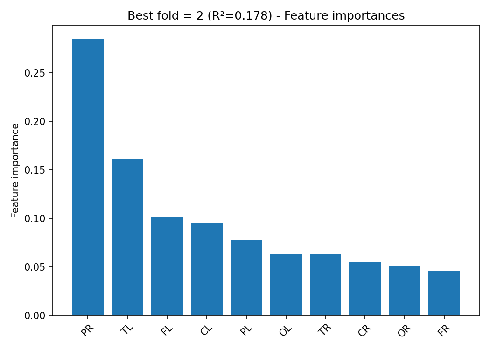
True vs Predicted Scatter Plots (by fold)
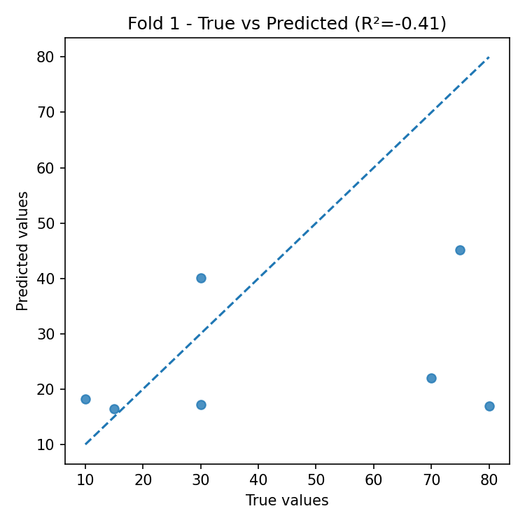
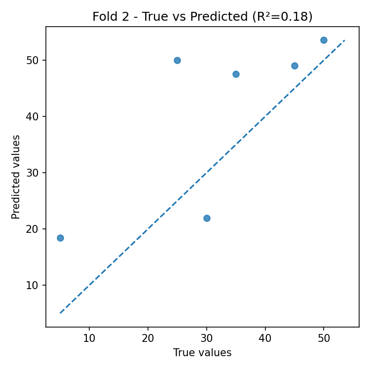
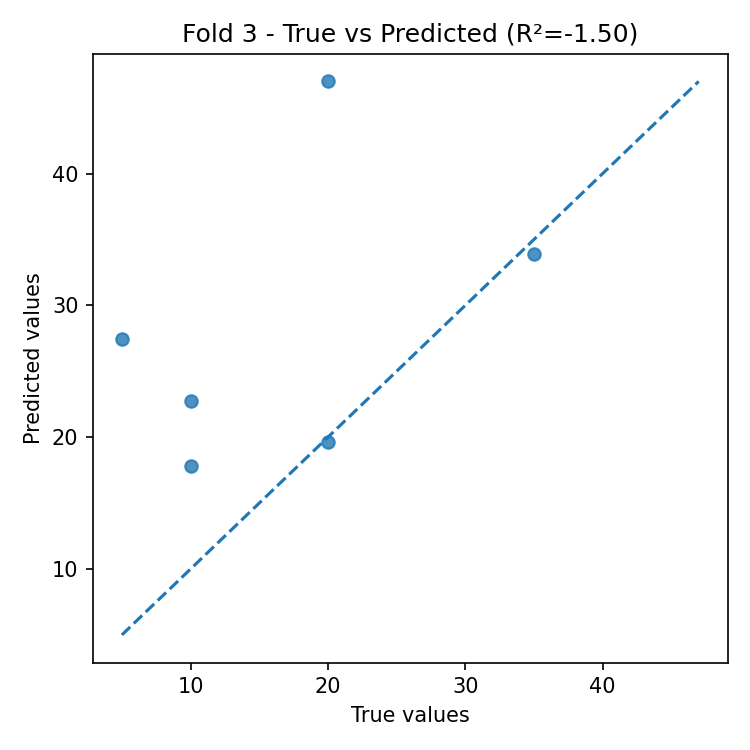
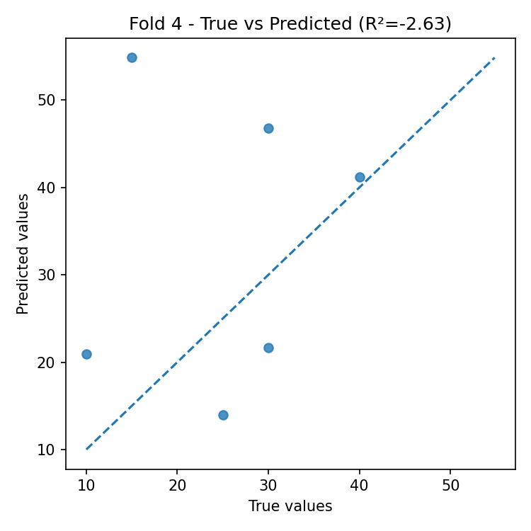
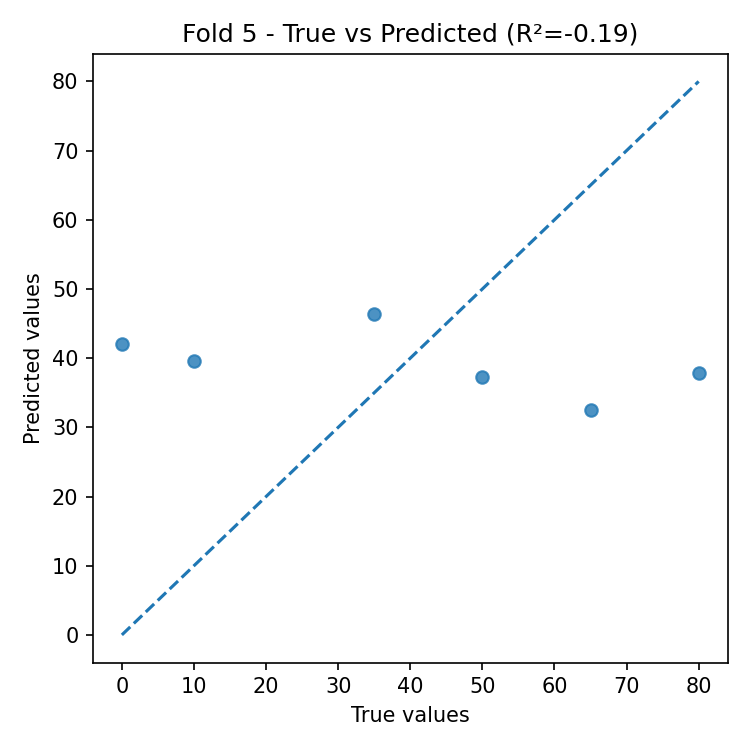
Residual Plots (by fold)
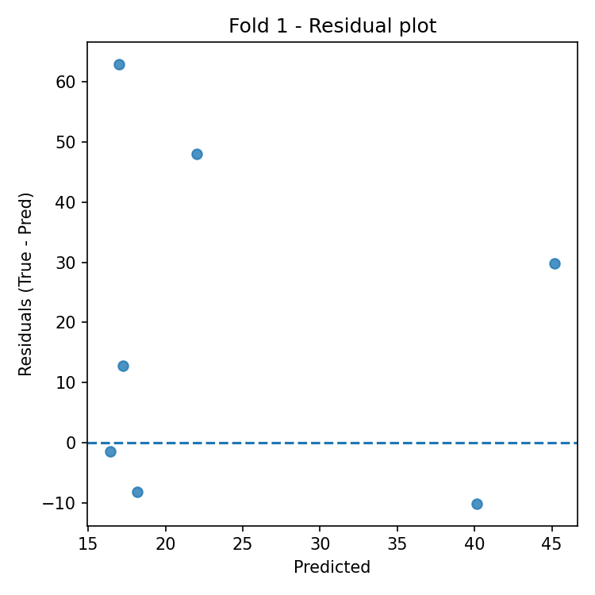
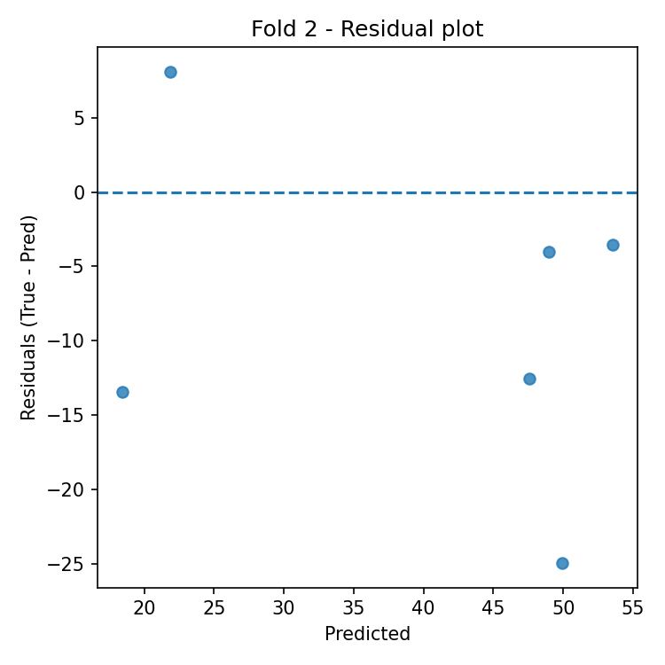
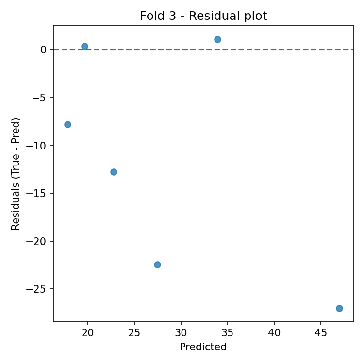
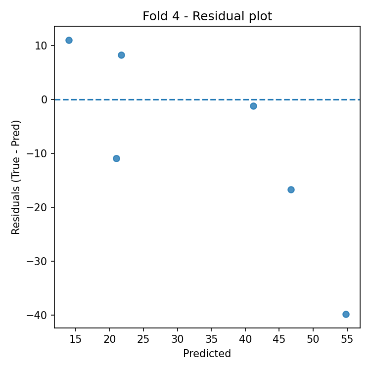
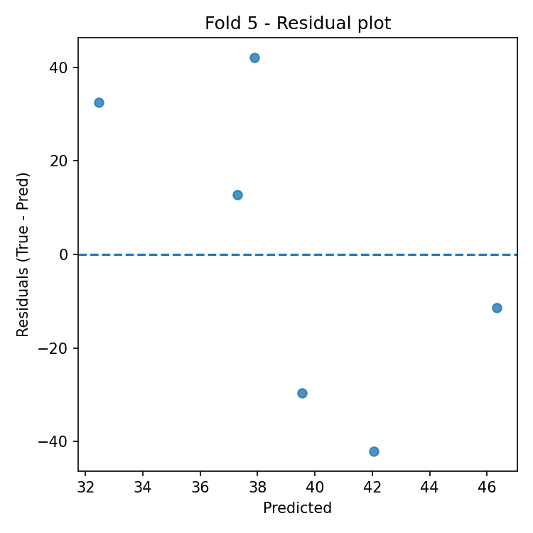
Automatic Interpretation
Overall Performance
- Mean R² across folds: -0.911 (± 1.149).
- Average error: RMSE = 22.326, MAE = 18.163 (same unit as target variable).
Model Stability
- R² variability across folds is high (std = 1.149).
- Average feature importance stability across folds: 0.042 (lower = more stable).
Most Important Features (average across all folds)
- Top-3: PR (0.250), OL (0.110), TL (0.110).
Best Fold
- Best fold: 2 with R² = 0.178.
- In the best fold, the most important features are: PR (0.285), TL (0.162), FL (0.102).
Residual Analysis (best fold)
- Residuals–predictions correlation: -0.320 (0 ≈ absence of linear bias).
- |Residuals|–predictions correlation: -0.022 (positive values indicate possible heteroscedasticity).
- Outliers (|res| > 3·std): 0.